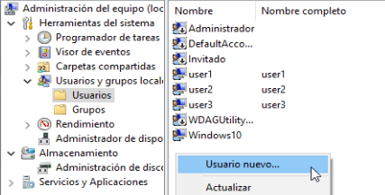
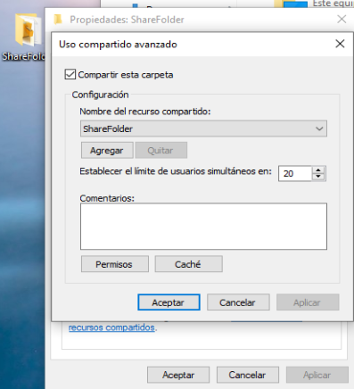

Configuración del servicio de archivos
- Asignar el mismo grupo de trabajo
Primero vamos a poenr los dos Windows 10 en el mismo grupo de trabajo, en mi caso lo he personalizado y los he puesto en PF_MARINA, iremos a:
Ajustes > Sistema > Acerca de > Cambiar el nombre del equipo (avanzado) > Cambiar
Grupo de trabajo: PF_MARINA
Nos pedirá reiniciar el equipo y ya los tendremos a los dos dentro del mismo grupo de trabajo.

- Creación de la carpeta compartida
Vamos a crear la carpeta que vamos a compartir en uno de los dos equipos. No importa en que equipo creemos la carpeta, yo por ejemplo la crearé en el equipo Windows102 y añadiré unos documentos dentro de esta.

- Creación de usuarios
Para poder hacer pruebas vamos a crear tres usuarios, los cuales tendrán diferentes permisos sobre la carpeta compartida.
- User1: Usuario1
- User2: Usuario2
- User3: Usuario3
Iremos a:
Administrador de equipos > Usuarios y grupos locales > Usuarios
Clic derecho > Usuario Nuevo

- Compartir la carpeta
Ahora que tenemos la carpeta y los usuarios creados, vamos a compartir la carpeta y les asignaremos los siguientes permisos a los usuarios que hemos creado sobre la carpeta que vamos a compartir.
- User1: Usuario1
- Lectura y escritura
- User2: Usuario2
- Solo lectura
- User3: Usuario3
- Denegaremos el acceso
Haremos lo siguiente en la carpeta
Clic derecho > Propiedades > Compartir > Uso compartido avanzado > Compartir esta carpeta
Clic derecho > Propiedades > Seguridad > Editar > Agregar



- Configuración del escritorio remoto
En el equipo Windows102 entraremos en Ajustes > Sistema > Acerca de > Configuración Avanzada del sistema > Acceso Remoto, activaremos el acceso remoto y especificaremos que solo podremos acceder si nos logeamos desde los usuario user1, user2 y user3

- Comprobar el funcionamiento
Vamos a comprobar que funciona de diferentes formas, usando el escritorio remoto desde el equipo de Windows101 nos logearemos con los 3 usuarios, desde el equipo Windows101 intentaremos acceder a la carpeta y desde el propio equipo Windoiws102 nos logearemos con los 3 usuarios.
Explorador de archivos > Red > \\172.16.10.60
Donde:
- \ \172.16.10.60 --> es la dirección IP del equipo donde se encuentra a carpeta compartida
Desde el equipo de Windows102
User1

User2

User3

Desde el escritorio remoto del equipo de Windows101
User1


User2


User3


Desde el equipo de Windows101